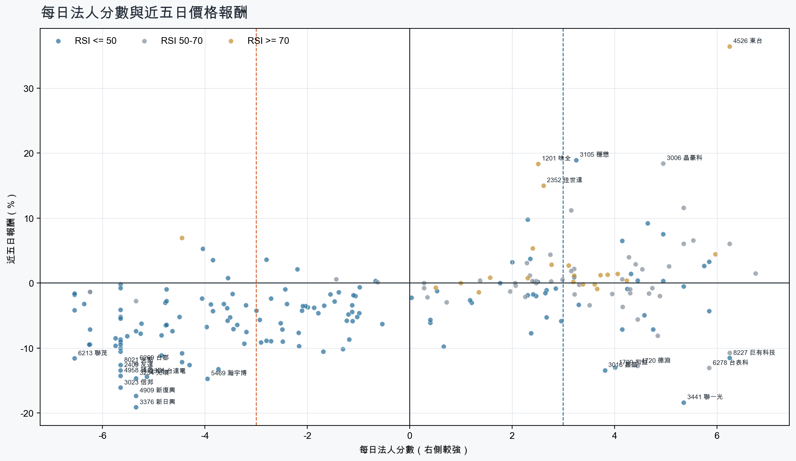
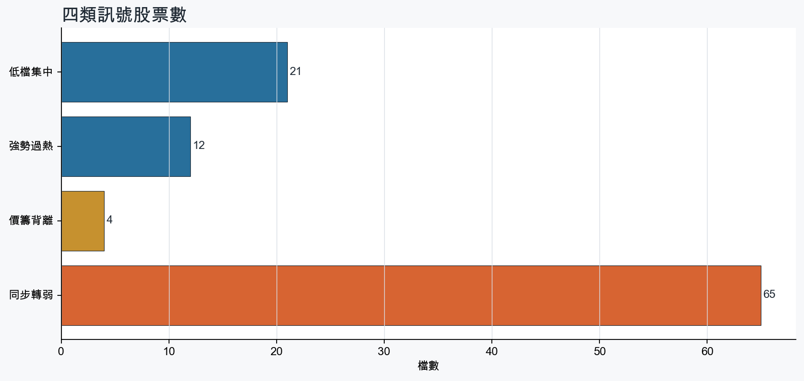
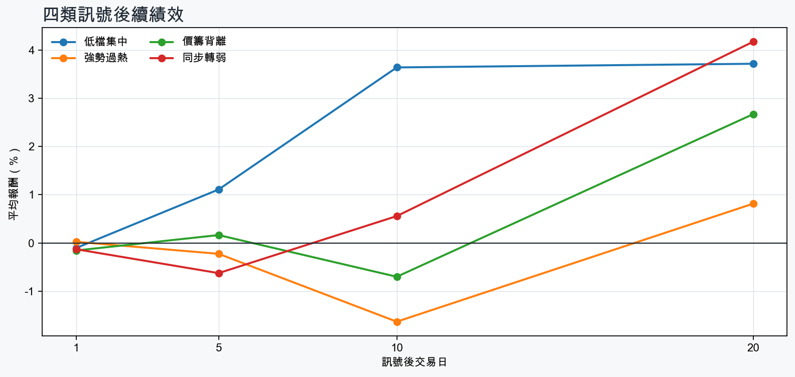

市場情緒偏空
近5日法人合計-7,148,570 張
篩選池上漲比例27.7%
籌碼好 / RSI低15 檔
籌碼差 / 價跌15 檔



EPS × PE VALUATION
法人常用的相對估值
顯示保守、基準與樂觀估值帶，不把單一數字包裝成精準目標價。
最新累計 EPS 依季數年化 × 同產業有效 P/E 的 Q25／中位數／Q75。排除本公司、非正 P/E，並以 1.5×IQR 排除離群值。估值帶是公開資料篩選值，不是法人目標價；未使用分析師預估 EPS。
MOOD × MONEY
情緒與籌碼雷達
熱度代表被討論程度；情緒分與法人方向分開計算。熱門不等於適合追價，樣本不足也不硬判多空。
| 股票 | 情緒 | 討論熱度 | 情緒 × 籌碼 | 情緒 × 基本面 |
|---|---|---|---|---|
| 2409 友達同步轉弱 | 情緒低迷 -36.5信心 100 | 1004 篇 / 526 留言 / 3 則新聞 | 情籌雙弱法人分 -5.7 | 基本面與情緒分歧基本面分 -0.8 |
| 2308 台達電同步轉弱 | 偏空 -15.8信心 100 | 953 篇 / 386 留言 / 3 則新聞 | 情籌混合法人分 -5.1 | 基本面與情緒分歧基本面分 +3.6 |
| 2303 聯電同步轉弱 | 中性分歧 +5.3信心 100 | 913 篇 / 286 留言 / 3 則新聞 | 高熱分歧法人分 -4.8 | 基本面與情緒分歧基本面分 +3.6 |
| 2603 長榮強勢過熱 | 偏多 +32.6信心 90 | 781 篇 / 123 留言 / 3 則新聞 | 情籌共振法人分 +6.0 | 基本面與情緒共振基本面分 +3.6 |
| 3105 穩懋低檔集中 | 情緒高漲 +100.0信心 100 | 703 篇 / 57 留言 / 3 則新聞 | 情籌共振法人分 +3.2 | 基本面與情緒共振基本面分 +3.6 |
| 2492 華新科價籌背離 | 偏多 +20.1信心 56 | 621 篇 / 41 留言 / 1 則新聞 | 熱門但法人撤退法人分 -3.9 | 基本面與情緒共振基本面分 +3.0 |
| 2412 中華電強勢過熱 | 偏多 +23.9信心 56 | 591 篇 / 29 留言 / 2 則新聞 | 情籌共振法人分 +3.9 | 基本面與情緒共振基本面分 +3.6 |
| 1569 濱川價籌背離 | 偏多 +21.5信心 34 | 441 篇 / 6 留言 / 1 則新聞 | 熱門但法人撤退法人分 -4.5 | 情緒領先基本面基本面分 -1.5 |
| 4958 臻鼎-KY同步轉弱 | 中性分歧 +0.0信心 30 | 360 篇 / 0 留言 / 3 則新聞 | 情籌混合法人分 -5.7 | 基本面與情緒分歧基本面分 +3.0 |
| 5469 瀚宇博同步轉弱 | 偏空 -29.7信心 30 | 360 篇 / 0 留言 / 3 則新聞 | 情籌雙弱法人分 -4.0 | 基本面佳、情緒悲觀基本面分 +3.0 |
| 6488 環球晶同步轉弱 | 中性分歧 -9.9信心 30 | 360 篇 / 0 留言 / 3 則新聞 | 情籌混合法人分 -5.8 | 基本面與情緒分歧基本面分 -0.1 |
| 3374 精材價籌背離 | 中性分歧 +0.0信心 30 | 360 篇 / 0 留言 / 3 則新聞 | 情籌混合法人分 -4.0 | 基本面與情緒分歧基本面分 +3.6 |
01
籌碼好 / RSI低
優先研究基本面；法人續買且價格止穩時，才適合分批觀察。
| 股票 / 確認狀態 | 每日法人分 | 浦男式近似 | 法人加速度 | RSI / 相對強弱 | 量價確認 | 融資融券 | 每週集保確認 | 基本面 | EPS × 同業 P/E 估值 | 情緒 / 情籌 | 近期消息 | 論壇討論 |
|---|---|---|---|---|---|---|---|---|---|---|---|---|
| 3105 穩懋可研究 · 100 分籌碼與價格確認，可列研究清單 | +3.2法人 +24,877 張 / 2 天 | 命中 · 95站上月線；中期均線偏多；法人籌碼偏多；留意買超延續不足 | +27,545 張近3日 +27,372 / 連續 -1 日 | 49.5相對大盤 +11.7% | 量比 1.70確認分 +7.1價格、量能與籌碼未見明顯弱項 | -6.7%融資 -2,933 張 / 融券 +641 張 | +4.28 pp1000張 +4.91 pp | 單月營收年增 +30.0%；累計營收年增 +32.6%；2026 Q2 累計 EPS 3.56仍需觀察下一期財報延續性來源：公開資訊觀測站 | 基準 NT$ 174.3估值帶 114.5–279.5現價 578.0 · 高於估值帶 · 距基準 -69.8%2026 Q2 累計 EPS 3.56 → 年化 7.12半導體同業 P/E 16.08／24.48／39.25 · n=146 · 信心中等以 Q2 累計 EPS 年化，不等同分析師全年預估來源：TWSE／TPEx 每日本益比 | 情緒高漲 +100.0熱度 70 / 信心 100情籌共振 | SpaceX、AI 光通訊成新引擎！外資看穩懋兩樣情，大摩喊上 700 元、高盛喊賣TechNews 科技新報 · 10/30財報亮麗、展望佳法人調高穩懋獲利預估值及目標價| 經濟日報LINE TODAY · 10/30 | [情報] 3105 穩懋 115Q3自結:4.55 累計:8.12PTT Stock · 10-28 · 22 留言[情報] 2323 中環 買聯亞，賣穩懋賺56,761,153元PTT Stock · 10-29 · 21 留言 |
| 2617 台航可研究 · 100 分籌碼與價格確認，可列研究清單 | +4.3法人 +1,637 張 / 5 天 | 接近 · 95站上月線；中期均線偏多；法人籌碼偏多；留意流動性偏低 | +1,024 張近3日 +1,238 / 連續 +5 日 | 48.4相對大盤 +6.7% | 量比 1.34確認分 +6.2流動性偏低 | -%融資 - 張 / 融券 - 張 | +0.13 pp1000張 -0.33 pp | 單月營收年增 +19.9%；累計營收年增 +19.1%；2026 Q2 累計 EPS 1.55仍需觀察下一期財報延續性來源：公開資訊觀測站 | 基準 NT$ 34.97估值帶 28.30–44.95現價 31.95 · 估值帶內 · 距基準 +9.4%2026 Q2 累計 EPS 1.55 → 年化 3.10航運業同業 P/E 9.13／11.28／14.50 · n=26 · 信心中等以 Q2 累計 EPS 年化，不等同分析師全年預估來源：TWSE／TPEx 每日本益比 | 樣本不足 +0.0熱度 22 / 信心 10情緒樣本不足 | 2617 台航- 美反对北京政治胁迫台湾全力维护航空主权(图) - 股市爆料同學會CMoney · 10/30 | 近期沒有明確提及本股的論壇樣本 |
| 2451 創見可研究 · 100 分籌碼與價格確認，可列研究清單 | +5.8法人 +4,489 張 / 4 天 | 接近 · 90站上月線；法人籌碼偏多；法人買盤加速；留意中期均線未翻多 | +1,171 張近3日 +2,990 / 連續 -1 日 | 49.7相對大盤 +3.4% | 量比 1.04確認分 +3.820日線低於60日線 | -%融資 - 張 / 融券 - 張 | +0.22 pp1000張 +0.62 pp | 單月營收年增 +290.4%；累計營收年增 +370.0%；2026 Q2 累計 EPS 46.63仍需觀察下一期財報延續性來源：公開資訊觀測站 | 基準 NT$ 2,290估值帶 1,510–3,744現價 284.0 · 低於估值帶 · 距基準 +706.2%2026 Q2 累計 EPS 46.63 → 年化 93.26半導體同業 P/E 16.19／24.55／40.15 · n=146 · 信心中等以 Q2 累計 EPS 年化，不等同分析師全年預估來源：TWSE／TPEx 每日本益比 | 樣本不足 +0.0熱度 22 / 信心 10情緒樣本不足 | 《半導體》創見11月6日自辦法說富聯網 · 10/30 | 近期沒有明確提及本股的論壇樣本 |
| 2393 億光可研究 · 93 分籌碼與價格確認，可列研究清單 | +4.2法人 +2,656 張 / 4 天 | 接近 · 90中期均線偏多；法人籌碼偏多；法人買盤加速；留意未站月線 | +372 張近3日 +1,739 / 連續 +1 日 | 45.2相對大盤 +9.3% | 量比 1.13確認分 +3.5收盤跌破20日線 | -%融資 - 張 / 融券 - 張 | +1.01 pp1000張 +0.89 pp | 單月營收年增 +18.6%；累計營收年增 +7.6%；2026 Q2 累計 EPS 2.14仍需觀察下一期財報延續性來源：公開資訊觀測站 | 基準 NT$ 105.7估值帶 48.88–157.3現價 67.20 · 估值帶內 · 距基準 +57.3%2026 Q2 累計 EPS 2.14 → 年化 4.28光電同業 P/E 11.42／24.70／36.76 · n=68 · 信心中等以 Q2 累計 EPS 年化，不等同分析師全年預估來源：TWSE／TPEx 每日本益比 | 樣本不足 +0.0熱度 0 / 信心 0情緒樣本不足 | 近期沒有通過股票語境篩選的新聞 | 近期沒有明確提及本股的論壇樣本 |
| 4916 事欣科可研究 · 85 分籌碼與價格確認，可列研究清單 | +4.5法人 +3,704 張 / 3 天 | 接近 · 85中期均線偏多；法人籌碼偏多；法人買盤加速；留意未站月線 | +3,334 張近3日 +3,798 / 連續 -1 日 | 46.6相對大盤 +1.2% | 量比 1.27確認分 +1.3收盤跌破20日線 | -%融資 - 張 / 融券 - 張 | +2.70 pp1000張 -0.03 pp | 單月營收年增 +70.3%；累計營收年增 +63.0%；2026 Q2 累計 EPS 5.45仍需觀察下一期財報延續性來源：公開資訊觀測站 | 基準 NT$ 172.1估值帶 126.7–239.2現價 100.0 · 低於估值帶 · 距基準 +72.1%2026 Q2 累計 EPS 5.45 → 年化 10.90電腦及週邊同業 P/E 11.62／15.79／21.94 · n=79 · 信心中等以 Q2 累計 EPS 年化，不等同分析師全年預估來源：TWSE／TPEx 每日本益比 | 樣本不足 +0.0熱度 22 / 信心 10情緒樣本不足 | 國防航太低軌衛星旺，事欣科明年營收衝歷史次高- 新聞MoneyDJ · 10/16 | 近期沒有明確提及本股的論壇樣本 |
| 9939 宏全等待確認 · 81 分籌碼有訊號，但價格尚未確認 | +5.8法人 +4,310 張 / 4 天 | 未命中 · 55法人籌碼偏多；法人買盤加速；買超具延續性；留意未站月線、中期均線未翻多 | +2,456 張近3日 +3,249 / 連續 +2 日 | 32.4相對大盤 +1.5% | 量比 4.03確認分 +0.2收盤跌破20日線；20日線低於60日線 | -%融資 - 張 / 融券 - 張 | +0.36 pp1000張 -0.16 pp | 單月營收年增 +3.6%；累計營收年增 +3.3%；2026 Q2 累計 EPS 6.55仍需觀察下一期財報延續性來源：公開資訊觀測站 | 基準 NT$ 181.8估值帶 134.1–304.6現價 121.5 · 低於估值帶 · 距基準 +49.6%2026 Q2 累計 EPS 6.55 → 年化 13.10其他同業 P/E 10.24／13.88／23.25 · n=70 · 信心中等以 Q2 累計 EPS 年化，不等同分析師全年預估來源：TWSE／TPEx 每日本益比 | 樣本不足 +0.0熱度 0 / 信心 0情緒樣本不足 | 近期沒有通過股票語境篩選的新聞 | 近期沒有明確提及本股的論壇樣本 |
| 5351 鈺創等待確認 · 78 分籌碼有訊號，但價格尚未確認 | +5.0法人 +4,345 張 / 3 天 | 接近 · 71法人籌碼偏多；法人買盤加速；買超具延續性；留意未站月線、中期均線未翻多 | +252 張近3日 +2,702 / 連續 +1 日 | 43.0相對大盤 +2.4% | 量比 1.06確認分 +0.6收盤跌破20日線；20日線低於60日線 | +4.1%融資 +545 張 / 融券 -63 張 | -1.34 pp1000張 -2.00 pp | 單月營收年增 +500.3%；累計營收年增 +490.8%；2026 Q2 累計 EPS 6.69仍需觀察下一期財報延續性來源：公開資訊觀測站 | 基準 NT$ 328.5估值帶 215.2–537.2現價 107.5 · 低於估值帶 · 距基準 +205.6%2026 Q2 累計 EPS 6.69 → 年化 13.38半導體同業 P/E 16.08／24.55／40.15 · n=146 · 信心較低以 Q2 累計 EPS 年化，不等同分析師全年預估；年化 EPS 為交易所近四季 EPS 的 2.07 倍，需保守解讀來源：TWSE／TPEx 每日本益比 | 樣本不足 +0.0熱度 0 / 信心 0情緒樣本不足 | 近期沒有通過股票語境篩選的新聞 | 近期沒有明確提及本股的論壇樣本 |
| 3441 聯一光等待確認 · 84 分籌碼有訊號，但價格尚未確認 | +5.3法人 +1,629 張 / 4 天 | 接近 · 65中期均線偏多；法人籌碼偏多；法人買盤加速；留意未站月線、量能異常 | +530 張近3日 +460 / 連續 +2 日 | 29.9相對大盤 +1.3% | 量比 0.10確認分 +2.1收盤跌破20日線；成交量不足 | -6.4%融資 -273 張 / 融券 -790 張 | -7.33 pp1000張 +0.00 pp | 單月營收年增 +8.8%；累計營收年增 +25.9%；2026 Q2 累計 EPS 1.16仍需觀察下一期財報延續性來源：公開資訊觀測站 | 基準 NT$ 55.63估值帶 26.49–80.62現價 177.5 · 高於估值帶 · 距基準 -68.7%2026 Q2 累計 EPS 1.16 → 年化 2.32光電同業 P/E 11.42／23.98／34.75 · n=68 · 信心中等以 Q2 累計 EPS 年化，不等同分析師全年預估來源：TWSE／TPEx 每日本益比 | 樣本不足 +0.0熱度 22 / 信心 10情緒樣本不足 | 3441 聯一光 - 外資+193 自營商+102 - 股市爆料同學會CMoney · 10/30 | 近期沒有明確提及本股的論壇樣本 |
| 8299 群聯等待確認 · 75 分籌碼有訊號，但價格尚未確認 | +5.8法人 +2,160 張 / 4 天 | 接近 · 61法人籌碼偏多；法人買盤加速；買超具延續性；留意未站月線、中期均線未翻多 | +272 張近3日 +1,594 / 連續 -1 日 | 41.4相對大盤 -5.2% | 量比 1.34確認分 -0.8收盤跌破20日線；20日線低於60日線；近20日弱於大盤 | +0.2%融資 +20 張 / 融券 +2 張 | -1.34 pp1000張 -2.39 pp | 單月營收年增 +370.3%；累計營收年增 +290.9%；2026 Q2 累計 EPS 187.43仍需觀察下一期財報延續性來源：公開資訊觀測站 | 基準 NT$ 9,203估值帶 6,069–15,051現價 1,930 · 低於估值帶 · 距基準 +376.8%2026 Q2 累計 EPS 187.4 → 年化 374.9半導體同業 P/E 16.19／24.55／40.15 · n=146 · 信心中等以 Q2 累計 EPS 年化，不等同分析師全年預估來源：TWSE／TPEx 每日本益比 | 中性分歧 +0.0熱度 31 / 信心 20情籌混合 | AI賺到翻！群聯、宜鼎等5檔前三季EPS挑戰百元 180家上市櫃公司拚賺逾1股本Yahoo股市 · 10/178299 群聯- 00991A大賣台塑化2,000張！轉攻群聯、奇鋐- 股市爆料同學會CMoney · 10/28 | 近期沒有明確提及本股的論壇樣本 |
| 2049 上銀等待確認 · 70 分籌碼有訊號，但價格尚未確認 | +4.7法人 +3,276 張 / 3 天 | 接近 · 73站上月線；法人籌碼偏多；買超具延續性；留意中期均線未翻多、法人買盤未加速 | -2,060 張近3日 +1,059 / 連續 -1 日 | 47.7相對大盤 +2.5% | 量比 0.86確認分 -1.120日線低於60日線；法人買盤減速 | -%融資 - 張 / 融券 - 張 | -1.07 pp1000張 +0.10 pp | 單月營收年增 +30.1%；累計營收年增 +23.9%；2026 Q2 累計 EPS 4.03仍需觀察下一期財報延續性來源：公開資訊觀測站 | 基準 NT$ 146.1估值帶 102.1–215.6現價 326.5 · 高於估值帶 · 距基準 -55.2%2026 Q2 累計 EPS 4.03 → 年化 8.06電機機械同業 P/E 12.67／18.13／26.75 · n=72 · 信心中等以 Q2 累計 EPS 年化，不等同分析師全年預估來源：TWSE／TPEx 每日本益比 | 中性分歧 +0.0熱度 36 / 信心 30情籌混合 | 上銀人形機器人零組件出貨了！股價強鎖漲停 機器人大軍動起來經濟日報 · 10/26今日漲停股｜機器人、AI伺服器與半導體自動化強勢領軍，上銀、東台、盟立聯手攻亮燈1027｜豐雲學堂2026 年 10 月永豐金證券 · 10/27 | 近期沒有明確提及本股的論壇樣本 |
| 2820 華票可研究 · 82 分籌碼與價格確認，可列研究清單 | +3.2法人 +3,208 張 / 5 天 | 接近 · 81站上月線；法人籌碼偏多；法人買盤加速；留意中期均線未翻多、量能尚未確認 | +607 張近3日 +1,792 / 連續 +5 日 | 46.2相對大盤 +4.5% | 量比 0.87確認分 +3.420日線低於60日線 | -%融資 - 張 / 融券 - 張 | -0.69 pp1000張 -1.06 pp | 累計營收年增 +40.6%；2026 Q2 累計 EPS 1.07單月營收年增 -5.2%來源：公開資訊觀測站 | 基準 NT$ 28.29估值帶 14.72–34.60現價 16.75 · 估值帶內 · 距基準 +68.9%2026 Q2 累計 EPS 1.07 → 年化 2.14金融保險同業 P/E 6.88／13.22／16.17 · n=39 · 信心中等以 Q2 累計 EPS 年化，不等同分析師全年預估來源：TWSE／TPEx 每日本益比 | 樣本不足 +0.0熱度 22 / 信心 10情緒樣本不足 | 財報：華票(2820)115年前三季歸屬母公司淨利20億250萬元，EPS 1.49元富聯網 · 10/30 | 近期沒有明確提及本股的論壇樣本 |
| 2344 華邦電等待確認 · 67 分籌碼有訊號，但價格尚未確認 | +4.2法人 +59,611 張 / 3 天 | 未命中 · 56法人籌碼偏多；法人買盤加速；買超具延續性；留意未站月線、中期均線未翻多 | +4,458 張近3日 +37,834 / 連續 -1 日 | 42.3相對大盤 -3.3% | 量比 0.89確認分 -1.4收盤跌破20日線；20日線低於60日線；近20日弱於大盤 | -%融資 - 張 / 融券 - 張 | -0.69 pp1000張 -0.81 pp | 單月營收年增 +256.7%；累計營收年增 +187.4%；2026 Q2 累計 EPS 7.65仍需觀察下一期財報延續性來源：公開資訊觀測站 | 基準 NT$ 375.6估值帶 246.0–614.3現價 164.5 · 低於估值帶 · 距基準 +128.3%2026 Q2 累計 EPS 7.65 → 年化 15.30半導體同業 P/E 16.08／24.55／40.15 · n=146 · 信心中等以 Q2 累計 EPS 年化，不等同分析師全年預估來源：TWSE／TPEx 每日本益比 | 中性分歧 +0.0熱度 36 / 信心 30情籌混合 | 【零股排行榜】 盤中零股成交量TOP 20｜0050 元大台灣50、2344 華邦電、2408 南亞科、1303 南亞、00406A 主動中信台灣收益(1028)｜豐雲學堂2026 年 10 月永豐金證券 · 10/292344 華邦電- 新唐人事異動！焦家第三代焦子愷明年掌管新唐，日本事業重整成法說焦點- 股市爆料同學會CMoney · 10/30 | 近期沒有明確提及本股的論壇樣本 |
| 2034 允強等待確認 · 61 分籌碼有訊號，但價格尚未確認 | +4.6法人 +3,613 張 / 4 天 | 接近 · 58中期均線偏多；法人籌碼偏多；買超具延續性；留意未站月線、法人買盤未加速 | -2,513 張近3日 +508 / 連續 +2 日 | 38.2相對大盤 -1.6% | 量比 0.48確認分 -3.2收盤跌破20日線；成交量不足；法人買盤減速 | -%融資 - 張 / 融券 - 張 | +1.84 pp1000張 +1.16 pp | 單月營收年增 +47.4%；累計營收年增 +4.7%；2026 Q2 累計 EPS 0.142026 Q2 累計營益率 3.2%來源：公開資訊觀測站 | 基準 NT$ 3.34估值帶 2.88–4.22現價 23.15 · 高於估值帶 · 距基準 -85.6%2026 Q2 累計 EPS 0.14 → 年化 0.28鋼鐵工業同業 P/E 10.27／11.93／15.06 · n=28 · 信心中等以 Q2 累計 EPS 年化，不等同分析師全年預估來源：TWSE／TPEx 每日本益比 | 樣本不足 +0.0熱度 22 / 信心 10情緒樣本不足 | 鋼價漲、鐵礦砂跌！允強第三季營收暴增38% 能否醞釀第二波行情？理財周刊 · 10/15 | 近期沒有明確提及本股的論壇樣本 |
| 4540 全球傳動等待確認 · 62 分籌碼有訊號，但價格尚未確認 | +5.3法人 +1,504 張 / 4 天 | 接近 · 72中期均線偏多；法人籌碼偏多；買超具延續性；留意未站月線、法人買盤未加速 | -569 張近3日 +587 / 連續 +4 日 | 49.3相對大盤 -3.0% | 量比 1.51確認分 -3.7收盤跌破20日線；法人買盤減速 | -%融資 - 張 / 融券 - 張 | +1.02 pp1000張 +0.01 pp | 單月營收年增 +40.2%；累計營收年增 +43.4%；2026 Q2 累計 EPS 0.252026 Q2 累計營益率 0.5%來源：公開資訊觀測站 | 基準 NT$ 9.07估值帶 6.36–13.99現價 57.10 · 高於估值帶 · 距基準 -84.1%2026 Q2 累計 EPS 0.25 → 年化 0.50電機機械同業 P/E 12.72／18.15／27.99 · n=73 · 信心較低以 Q2 累計 EPS 年化，不等同分析師全年預估；交易所無有效本益比，無法交叉檢核近四季 EPS來源：TWSE／TPEx 每日本益比 | 偏多 +19.8熱度 31 / 信心 20情籌混合 | 全球傳動(4540)走出連虧陰霾！機器人、CPO開始出貨，2027年成長動能值得期待優分析UAnalyze · 10/30全球傳動Q3獲利續看增，全年營收可望拚高- 新聞MoneyDJ · 10/19 | 近期沒有明確提及本股的論壇樣本 |
| 1709 和益等待確認 · 76 分籌碼有訊號，但價格尚未確認 | +4.0法人 +3,652 張 / 3 天 | 接近 · 70中期均線偏多；法人籌碼偏多；法人買盤加速；留意未站月線、量能異常 | +7,770 張近3日 +1,217 / 連續 +2 日 | 32.1相對大盤 +4.5% | 量比 0.53確認分 +2.3收盤跌破20日線；成交量不足 | -%融資 - 張 / 融券 - 張 | -5.31 pp1000張 -4.71 pp | 單月營收年增 +6.6%；累計營收年增 +20.3%；2026 Q2 累計 EPS 1.30仍需觀察下一期財報延續性來源：公開資訊觀測站 | 基準 NT$ 47.76估值帶 35.36–81.87現價 48.10 · 估值帶內 · 距基準 -0.7%2026 Q2 累計 EPS 1.30 → 年化 2.60化學工業同業 P/E 13.60／18.37／31.49 · n=34 · 信心中等以 Q2 累計 EPS 年化，不等同分析師全年預估來源：TWSE／TPEx 每日本益比 | 樣本不足 +0.0熱度 0 / 信心 0情緒樣本不足 | 近期沒有通過股票語境篩選的新聞 | 近期沒有明確提及本股的論壇樣本 |
02
籌碼好 / RSI高
趨勢強但不追價，等待量縮、RSI降溫或回測支撐。
| 股票 / 確認狀態 | 每日法人分 | 浦男式近似 | 法人加速度 | RSI / 相對強弱 | 量價確認 | 融資融券 | 每週集保確認 | 基本面 | EPS × 同業 P/E 估值 | 情緒 / 情籌 | 近期消息 | 論壇討論 |
|---|---|---|---|---|---|---|---|---|---|---|---|---|
| 2603 長榮等待拉回 · 100 分等拉回，不追價 | +6.0法人 +17,417 張 / 5 天 | 命中 · 96站上月線；中期均線偏多；法人籌碼偏多；留意動能位置非最佳 | +7,963 張近3日 +13,101 / 連續 +9 日 | 76.7相對大盤 +18.4% | 量比 1.71確認分 +6.5價格、量能與籌碼未見明顯弱項 | -%融資 - 張 / 融券 - 張 | +1.59 pp1000張 +1.92 pp | 單月營收年增 +63.7%；累計營收年增 +15.4%；2026 Q2 累計 EPS 11.24仍需觀察下一期財報延續性來源：公開資訊觀測站 | 基準 NT$ 253.6估值帶 202.5–326.0現價 271.5 · 估值帶內 · 距基準 -6.6%2026 Q2 累計 EPS 11.24 → 年化 22.48航運業同業 P/E 9.01／11.28／14.50 · n=26 · 信心中等以 Q2 累計 EPS 年化，不等同分析師全年預估來源：TWSE／TPEx 每日本益比 | 偏多 +32.6熱度 78 / 信心 90情籌共振 | 【10:02 即時新聞】長榮(2603)股價走強，盤面聚焦貨櫃運價淡季不淡CMoney投資網誌 · 10/30三大法人買賣超– 外資買超(3008)大立光、(2603)長榮，投信買超(3711)日月光投控、(2330)台積電，法人合計賣超1398.44億元(1030)｜豐雲學堂2026 年 10 月永豐金證券 · 10/30 | [新聞] 因俄烏戰爭繞路4年 繼華航後 長榮也飛回PTT Stock · 10-27 · 123 留言 |
| 3045 台灣大等待拉回 · 100 分等拉回，不追價 | +4.2法人 +13,975 張 / 5 天 | 命中 · 96站上月線；中期均線偏多；法人籌碼偏多；留意動能位置非最佳 | +886 張近3日 +8,341 / 連續 +10 日 | 72.1相對大盤 +16.8% | 量比 1.10確認分 +4.8價格、量能與籌碼未見明顯弱項 | -%融資 - 張 / 融券 - 張 | +0.28 pp1000張 +0.39 pp | 單月營收年增 +10.3%；累計營收年增 +5.4%；2026 Q2 累計 EPS 2.86仍需觀察下一期財報延續性來源：公開資訊觀測站 | 基準 NT$ 125.6估值帶 82.20–228.6現價 133.5 · 估值帶內 · 距基準 -5.9%2026 Q2 累計 EPS 2.86 → 年化 5.72通信網路同業 P/E 14.37／21.96／39.97 · n=60 · 信心中等以 Q2 累計 EPS 年化，不等同分析師全年預估來源：TWSE／TPEx 每日本益比 | 樣本不足 +0.0熱度 0 / 信心 0情緒樣本不足 | 近期沒有通過股票語境篩選的新聞 | 近期沒有明確提及本股的論壇樣本 |
| 4904 遠傳等待拉回 · 98 分等拉回，不追價 | +3.7法人 +8,251 張 / 5 天 | 命中 · 96站上月線；中期均線偏多；法人籌碼偏多；留意動能位置非最佳 | +1,350 張近3日 +5,688 / 連續 +10 日 | 72.2相對大盤 +15.2% | 量比 1.42確認分 +5.0價格、量能與籌碼未見明顯弱項 | -%融資 - 張 / 融券 - 張 | +0.23 pp1000張 +0.27 pp | 單月營收年增 +8.7%；累計營收年增 +11.0%；2026 Q2 累計 EPS 2.14仍需觀察下一期財報延續性來源：公開資訊觀測站 | 基準 NT$ 93.99估值帶 61.50–171.1現價 114.0 · 估值帶內 · 距基準 -17.6%2026 Q2 累計 EPS 2.14 → 年化 4.28通信網路同業 P/E 14.37／21.96／39.97 · n=60 · 信心中等以 Q2 累計 EPS 年化，不等同分析師全年預估來源：TWSE／TPEx 每日本益比 | 偏多 +19.8熱度 31 / 信心 20情籌混合 | 【10:55 即時新聞】遠傳(4904)小漲守高檔，衛星通訊合作成盤中焦點CMoney投資網誌 · 10/30《通網股》AI戰火燒向鏡頭！OPPO Find X10系列登台遠傳祭0元購機- 上市櫃旺得富理財網 · 10/30 | 近期沒有明確提及本股的論壇樣本 |
| 2412 中華電等待拉回 · 100 分等拉回，不追價 | +3.9法人 +21,579 張 / 5 天 | 接近 · 90站上月線；中期均線偏多；法人籌碼偏多；留意RSI過熱 | +5,913 張近3日 +14,039 / 連續 +10 日 | 88.6相對大盤 +16.6% | 量比 1.54確認分 +5.5價格、量能與籌碼未見明顯弱項 | -%融資 - 張 / 融券 - 張 | +0.45 pp1000張 +0.37 pp | 單月營收年增 +20.9%；累計營收年增 +10.8%；2026 Q2 累計 EPS 2.68仍需觀察下一期財報延續性來源：公開資訊觀測站 | 基準 NT$ 117.7估值帶 77.02–214.2現價 160.0 · 估值帶內 · 距基準 -26.4%2026 Q2 累計 EPS 2.68 → 年化 5.36通信網路同業 P/E 14.37／21.96／39.97 · n=60 · 信心中等以 Q2 累計 EPS 年化，不等同分析師全年預估來源：TWSE／TPEx 每日本益比 | 偏多 +23.9熱度 59 / 信心 56情籌共振 | 【10:41 即時新聞】中華電(2412)小漲續創高檔格局，AI與電信題材同受關注CMoney投資網誌 · 10/302412 中華電- BBC Earth《藍色星球III》11月2日回歸，大衛艾登堡爵士百歲獻聲- 股市爆料同學會CMoney · 10/30 | Re: [標的] 2412中華電信爬到高點PTT Stock · 10-30 · 29 留言 |
| 2891 中信金等待拉回 · 96 分等拉回，不追價 | +3.7法人 +47,868 張 / 5 天 | 接近 · 90站上月線；中期均線偏多；法人籌碼偏多；留意RSI過熱 | +1,253 張近3日 +31,054 / 連續 +6 日 | 79.3相對大盤 +15.9% | 量比 1.44確認分 +4.6價格、量能與籌碼未見明顯弱項 | -%融資 - 張 / 融券 - 張 | +0.27 pp1000張 +0.33 pp | 單月營收年增 +12.8%；累計營收年增 +33.2%；2026 Q2 累計 EPS 1.96仍需觀察下一期財報延續性來源：公開資訊觀測站 | 基準 NT$ 51.78估值帶 26.97–61.74現價 75.80 · 高於估值帶 · 距基準 -31.7%2026 Q2 累計 EPS 1.96 → 年化 3.92金融保險同業 P/E 6.88／13.21／15.75 · n=39 · 信心中等以 Q2 累計 EPS 年化，不等同分析師全年預估來源：TWSE／TPEx 每日本益比 | 樣本不足 +0.0熱度 0 / 信心 0情緒樣本不足 | 近期沒有通過股票語境篩選的新聞 | 近期沒有明確提及本股的論壇樣本 |
| 2889 國票金等待拉回 · 98 分等拉回，不追價 | +3.2法人 +12,452 張 / 4 天 | 接近 · 90站上月線；中期均線偏多；法人籌碼偏多；留意RSI過熱 | +4,112 張近3日 +8,889 / 連續 +3 日 | 78.3相對大盤 +9.0% | 量比 1.24確認分 +5.9價格、量能與籌碼未見明顯弱項 | -%融資 - 張 / 融券 - 張 | -0.19 pp1000張 -0.18 pp | 單月營收年增 +23.9%；累計營收年增 +83.6%；2026 Q2 累計 EPS 0.77仍需觀察下一期財報延續性來源：公開資訊觀測站 | 基準 NT$ 20.34估值帶 10.60–24.90現價 17.15 · 估值帶內 · 距基準 +18.6%2026 Q2 累計 EPS 0.77 → 年化 1.54金融保險同業 P/E 6.88／13.21／16.17 · n=39 · 信心中等以 Q2 累計 EPS 年化，不等同分析師全年預估來源：TWSE／TPEx 每日本益比 | 樣本不足 +0.0熱度 0 / 信心 0情緒樣本不足 | 近期沒有通過股票語境篩選的新聞 | 近期沒有明確提及本股的論壇樣本 |
| 2912 統一超等待拉回 · 92 分等拉回，不追價 | +3.6法人 +4,313 張 / 5 天 | 命中 · 85站上月線；中期均線偏多；法人籌碼偏多；留意法人買盤未加速、動能位置非最佳 | -171 張近3日 +2,315 / 連續 +10 日 | 71.9相對大盤 +11.2% | 量比 1.30確認分 +4.3法人買盤減速 | -%融資 - 張 / 融券 - 張 | +0.54 pp1000張 -0.06 pp | 單月營收年增 +7.8%；累計營收年增 +5.7%；2026 Q2 累計 EPS 6.032026 Q2 累計營益率 4.2%來源：公開資訊觀測站 | 基準 NT$ 165.3估值帶 96.72–211.8現價 225.5 · 高於估值帶 · 距基準 -26.7%2026 Q2 累計 EPS 6.03 → 年化 12.06貿易百貨同業 P/E 8.02／13.71／17.56 · n=10 · 信心中等以 Q2 累計 EPS 年化，不等同分析師全年預估來源：TWSE／TPEx 每日本益比 | 偏多 +29.7熱度 36 / 信心 30情籌共振 | 台股30日開盤下殺跌破半年線 統一超止跌反彈強漲2%以上理財周刊 · 10/30【09:51 即時新聞】統一超(2912)盤中走強，聚焦前3季獲利創高CMoney投資網誌 · 10/30 | 近期沒有明確提及本股的論壇樣本 |
| 2880 華南金等待拉回 · 86 分等拉回，不追價 | +3.2法人 +15,481 張 / 5 天 | 命中 · 89站上月線；中期均線偏多；法人籌碼偏多；留意法人買盤未加速、動能位置非最佳 | -12,268 張近3日 +4,253 / 連續 +8 日 | 71.7相對大盤 +16.2% | 量比 1.60確認分 +3.4法人買盤減速 | -%融資 - 張 / 融券 - 張 | +0.13 pp1000張 +0.13 pp | 單月營收年增 +6.5%；累計營收年增 +25.2%；2026 Q2 累計 EPS 1.24仍需觀察下一期財報延續性來源：公開資訊觀測站 | 基準 NT$ 32.76估值帶 17.06–39.06現價 50.40 · 高於估值帶 · 距基準 -35.0%2026 Q2 累計 EPS 1.24 → 年化 2.48金融保險同業 P/E 6.88／13.21／15.75 · n=39 · 信心中等以 Q2 累計 EPS 年化，不等同分析師全年預估來源：TWSE／TPEx 每日本益比 | 中性分歧 +0.0熱度 31 / 信心 20情籌混合 | 傳公股打破華南金公民共治？阮清華：和諧共治多年股價衝上公股第二| 個股情報| 股市UDN · 10/30【11:02 即時新聞】華南金(2880)盤中小漲，市場聚焦法人與主力同步偏多CMoney投資網誌 · 10/30 | 近期沒有明確提及本股的論壇樣本 |
| 2801 彰銀等待拉回 · 89 分等拉回，不追價 | +3.1法人 +34,693 張 / 5 天 | 接近 · 83站上月線；中期均線偏多；法人籌碼偏多；留意法人買盤未加速、RSI過熱 | -7,575 張近3日 +18,838 / 連續 +10 日 | 80.9相對大盤 +16.3% | 量比 1.17確認分 +3.7法人買盤減速 | -%融資 - 張 / 融券 - 張 | +0.39 pp1000張 +0.47 pp | 單月營收年增 +12.8%；累計營收年增 +14.2%；2026 Q2 累計 EPS 0.94仍需觀察下一期財報延續性來源：公開資訊觀測站 | 基準 NT$ 24.83估值帶 12.93–29.61現價 30.70 · 高於估值帶 · 距基準 -19.1%2026 Q2 累計 EPS 0.94 → 年化 1.88金融保險同業 P/E 6.88／13.21／15.75 · n=39 · 信心中等以 Q2 累計 EPS 年化，不等同分析師全年預估來源：TWSE／TPEx 每日本益比 | 中性分歧 +0.0熱度 36 / 信心 30情籌混合 | 《金融股》彰銀主辦世平集團聯貸案簽約- 上市櫃旺得富理財網 · 10/30【13:08 即時新聞】彰銀(2801)盤中小漲，外資買盤續為金融族群焦點CMoney投資網誌 · 10/30 | 近期沒有明確提及本股的論壇樣本 |
| 5876 上海商銀等待拉回 · 83 分等拉回，不追價 | +3.4法人 +17,503 張 / 5 天 | 命中 · 89站上月線；中期均線偏多；法人籌碼偏多；留意法人買盤未加速、動能位置非最佳 | -7,330 張近3日 +6,729 / 連續 +10 日 | 75.1相對大盤 +16.0% | 量比 0.96確認分 +2.6法人買盤減速 | -%融資 - 張 / 融券 - 張 | +0.39 pp1000張 +0.39 pp | 單月營收年增 +10.7%；累計營收年增 +2.8%；2026 Q2 累計 EPS 2.08仍需觀察下一期財報延續性來源：公開資訊觀測站 | 基準 NT$ 54.95估值帶 28.62–67.27現價 54.50 · 估值帶內 · 距基準 +0.8%2026 Q2 累計 EPS 2.08 → 年化 4.16金融保險同業 P/E 6.88／13.21／16.17 · n=39 · 信心中等以 Q2 累計 EPS 年化，不等同分析師全年預估來源：TWSE／TPEx 每日本益比 | 樣本不足 +0.0熱度 0 / 信心 0情緒樣本不足 | 近期沒有通過股票語境篩選的新聞 | 近期沒有明確提及本股的論壇樣本 |
| 1101 台泥等待拉回 · 82 分等拉回，不追價 | +4.1法人 +41,514 張 / 4 天 | 命中 · 85站上月線；中期均線偏多；法人籌碼偏多；留意法人買盤未加速、動能位置非最佳 | -14,705 張近3日 +17,087 / 連續 +3 日 | 73.5相對大盤 +12.9% | 量比 0.91確認分 +2.5法人買盤減速 | -%融資 - 張 / 融券 - 張 | -0.23 pp1000張 -0.29 pp | 單月營收年增 +7.6%；累計營收年增 +3.3%；2026 Q2 累計 EPS 0.382026 Q2 累計營益率 7.3%來源：公開資訊觀測站 | 基準 NT$ 10.11估值帶 7.82–13.80現價 28.35 · 高於估值帶 · 距基準 -64.3%2026 Q2 累計 EPS 0.38 → 年化 0.76水泥工業同業 P/E 10.29／13.30／18.16 · n=6 · 信心較低以 Q2 累計 EPS 年化，不等同分析師全年預估；交易所無有效本益比，無法交叉檢核近四季 EPS來源：TWSE／TPEx 每日本益比 | 中性分歧 +0.0熱度 36 / 信心 30情籌混合 | 1101 台泥- 【金包銀之台泥：股災中的鋼筋水泥，避險資金敲進展現硬漢本色】 - 股市爆料同學會CMoney · 10/301101 台泥 - 尖叫聲鴨鴨～～ 泥最棒了我最愛泥💪💪💪 - 股市爆料同學會CMoney · 10/30 | 近期沒有明確提及本股的論壇樣本 |
| 4526 東台等待拉回 · 85 分等拉回，不追價 | +6.2法人 +27,586 張 / 5 天 | 接近 · 63站上月線；中期均線偏多；法人籌碼偏多；留意法人買盤未加速、量能尚未確認 | -14,982 張近3日 +7,231 / 連續 +6 日 | 90.9相對大盤 +69.5% | 量比 0.80確認分 +1.8法人買盤減速 | -%融資 - 張 / 融券 - 張 | +0.93 pp1000張 +0.55 pp | 單月營收年增 +81.0%；累計營收年增 +11.0%2026 Q2 累計 EPS -1.02；2026 Q2 累計營益率 -9.8%來源：公開資訊觀測站 | 不適用年化 EPS 非正數，不適合使用本益比估值 | 偏多 +29.7熱度 36 / 信心 30情籌共振 | 東台稱訂單看到2027年底：鑽孔機加上機器人，能更賺錢嗎？口袋證券 · 10/2810/30台股交易回顧｜東台(4526)漲勢驚人-林恩如CMoney投資網誌 · 10/30 | 近期沒有明確提及本股的論壇樣本 |
03
籌碼差 / 股價上漲
可能是事件行情或軋空；沒有籌碼改善前避免追高。
| 股票 / 確認狀態 | 每日法人分 | 浦男式近似 | 法人加速度 | RSI / 相對強弱 | 量價確認 | 融資融券 | 每週集保確認 | 基本面 | EPS × 同業 P/E 估值 | 情緒 / 情籌 | 近期消息 | 論壇討論 |
|---|---|---|---|---|---|---|---|---|---|---|---|---|
| 3374 精材風險警示 · 48 分背離警戒，避免追高 | -4.0法人 -1,620 張 / 1 天 | 接近 · 70站上月線；中期均線偏多；明顯強於大盤；留意法人籌碼偏弱、法人買盤未加速 | -6,681 張近3日 -2,393 / 連續 -4 日 | 48.2相對大盤 +12.4% | 量比 2.79確認分 +1.8法人買盤減速 | +0.6%融資 +174 張 / 融券 +158 張 | -1.62 pp1000張 -2.88 pp | 單月營收年增 +21.3%；累計營收年增 +31.5%；2026 Q2 累計 EPS 2.88仍需觀察下一期財報延續性來源：公開資訊觀測站 | 基準 NT$ 141.0估值帶 92.62–226.1現價 488.0 · 高於估值帶 · 距基準 -71.1%2026 Q2 累計 EPS 2.88 → 年化 5.76半導體同業 P/E 16.08／24.48／39.25 · n=146 · 信心中等以 Q2 累計 EPS 年化，不等同分析師全年預估來源：TWSE／TPEx 每日本益比 | 中性分歧 +0.0熱度 36 / 信心 30情籌混合 | 台股3檔「抓去關」新名單 精材下周起處置到11／10ETtoday財經雲 · 10/30精材9月自結EPS 0.84元；Q4營運續看增Yahoo股市 · 10/30 | 近期沒有明確提及本股的論壇樣本 |
| 1569 濱川風險警示 · 40 分背離警戒，避免追高 | -4.5法人 -1,517 張 / 2 天 | 未命中 · 51站上月線；中期均線偏多；明顯強於大盤；留意法人籌碼偏弱、法人買盤未加速 | -4,098 張近3日 -1,829 / 連續 +1 日 | 72.8相對大盤 +52.4% | 量比 2.61確認分 +1.1法人買盤減速；融資單日增幅偏高 | +5.4%融資 +733 張 / 融券 -134 張 | +4.26 pp1000張 +2.44 pp | 單月營收年增 +39.1%累計營收年增 -2.3%；2026 Q2 累計 EPS -1.67；2026 Q2 累計營益率 -10.7%來源：公開資訊觀測站 | 不適用年化 EPS 非正數，不適合使用本益比估值 | 偏多 +21.5熱度 44 / 信心 34熱門但法人撤退 | 【11:55 即時新聞】濱川(1569)小漲整理，市場持續聚焦AI水冷題材CMoney投資網誌 · 10/30 | [情報] 1569 濱川 達注意標準9月自結0.6元PTT Stock · 10-29 · 6 留言 |
| 2426 鼎元風險警示 · 12 分背離警戒，避免追高 | -3.5法人 -4,150 張 / 3 天 | 未命中 · 51中期均線偏多；買超具延續性；量價健康；留意未站月線、法人籌碼偏弱 | -2,777 張近3日 -2,968 / 連續 -1 日 | 36.3相對大盤 -10.9% | 量比 1.02確認分 -5.0收盤跌破20日線；近20日弱於大盤；法人買盤減速 | -%融資 - 張 / 融券 - 張 | -2.96 pp1000張 -1.78 pp | 單月營收年增 +40.9%；累計營收年增 +9.7%；2026 Q2 累計 EPS 0.282026 Q2 累計營益率 5.8%來源：公開資訊觀測站 | 不適用年化 EPS 與交易所近四季 EPS 差異過大，可能有股本調整或一次性損益 | 樣本不足 +0.0熱度 0 / 信心 0情緒樣本不足 | 近期沒有通過股票語境篩選的新聞 | 近期沒有明確提及本股的論壇樣本 |
| 2492 華新科風險警示 · 56 分背離警戒，避免追高 | -3.9法人 -11,243 張 / 3 天 | 接近 · 66中期均線偏多；買超具延續性；明顯強於大盤；留意未站月線、法人籌碼偏弱 | -462 張近3日 -3,641 / 連續 -1 日 | 43.5相對大盤 +32.3% | 量比 1.00確認分 +1.3收盤跌破20日線；法人買盤減速 | -%融資 - 張 / 融券 - 張 | +4.14 pp1000張 +4.55 pp | 單月營收年增 +53.9%；累計營收年增 +25.8%；2026 Q2 累計 EPS 4.93仍需觀察下一期財報延續性來源：公開資訊觀測站 | 基準 NT$ 235.6估值帶 169.5–402.6現價 381.0 · 估值帶內 · 距基準 -38.2%2026 Q2 累計 EPS 4.93 → 年化 9.86電子零組件同業 P/E 17.19／23.89／40.83 · n=146 · 信心中等以 Q2 累計 EPS 年化，不等同分析師全年預估來源：TWSE／TPEx 每日本益比 | 偏多 +20.1熱度 62 / 信心 56熱門但法人撤退 | 友達轉虧股價重挫，聯電、台達電遭外資爆賣，被動元件華新科跌停，下周盤勢重點玩股網 · 10/30 | [情報] 2492華新科公告本公司發行國內第二次無PTT Stock · 10-29 · 41 留言 |
04
籌碼差 / 股價下跌
籌碼與價格同弱，原則上迴避，等待法人與大戶同時回補。
| 股票 / 確認狀態 | 每日法人分 | 浦男式近似 | 法人加速度 | RSI / 相對強弱 | 量價確認 | 融資融券 | 每週集保確認 | 基本面 | EPS × 同業 P/E 估值 | 情緒 / 情籌 | 近期消息 | 論壇討論 |
|---|---|---|---|---|---|---|---|---|---|---|---|---|
| 3376 新日興風險警示 · 24 分迴避，等待籌碼翻正 | -5.3法人 -2,872 張 / 1 天 | 未命中 · 22法人買盤加速；量價健康；流動性足夠；留意未站月線、中期均線未翻多 | +334 張近3日 -630 / 連續 -1 日 | 31.0相對大盤 -15.0% | 量比 2.24確認分 -1.0收盤跌破20日線；20日線低於60日線；近20日弱於大盤 | -%融資 - 張 / 融券 - 張 | +1.15 pp1000張 +0.35 pp | 單月營收年增 +3.3%；2026 Q2 累計 EPS 0.47累計營收年增 -11.0%；2026 Q2 累計營益率 -1.8%來源：公開資訊觀測站 | 基準 NT$ 22.46估值帶 16.16–38.38現價 139.5 · 高於估值帶 · 距基準 -83.9%2026 Q2 累計 EPS 0.47 → 年化 0.94電子零組件同業 P/E 17.19／23.89／40.83 · n=146 · 信心中等以 Q2 累計 EPS 年化，不等同分析師全年預估來源：TWSE／TPEx 每日本益比 | 樣本不足 +0.0熱度 0 / 信心 0情緒樣本不足 | 近期沒有通過股票語境篩選的新聞 | 近期沒有明確提及本股的論壇樣本 |
| 3234 光環風險警示 · 0 分迴避，等待籌碼翻正 | -5.3法人 -2,749 張 / 1 天 | 未命中 · 31中期均線偏多；量價健康；流動性足夠；留意未站月線、法人籌碼偏弱 | -1,531 張近3日 -2,380 / 連續 -3 日 | 35.5相對大盤 -7.3% | 量比 1.27確認分 -4.8收盤跌破20日線；近20日弱於大盤；法人買盤減速 | -%融資 +0 張 / 融券 +0 張 | -4.47 pp1000張 -3.66 pp | 單月營收年增 +140.3%；累計營收年增 +38.1%2026 Q2 累計 EPS -0.48；2026 Q2 累計營益率 -15.0%來源：公開資訊觀測站 | 不適用年化 EPS 非正數，不適合使用本益比估值 | 樣本不足 +0.0熱度 0 / 信心 0情緒樣本不足 | 近期沒有通過股票語境篩選的新聞 | 近期沒有明確提及本股的論壇樣本 |
| 2409 友達風險警示 · 8 分迴避，等待籌碼翻正 | -5.7法人 -156,616 張 / 1 天 | 未命中 · 33中期均線偏多；法人買盤加速；流動性足夠；留意未站月線、法人籌碼偏弱 | +70,580 張近3日 -14,798 / 連續 -2 日 | 35.8相對大盤 -15.4% | 量比 0.75確認分 -1.8收盤跌破20日線；近20日弱於大盤 | -%融資 - 張 / 融券 - 張 | -7.02 pp1000張 -7.12 pp | 2026 Q2 累計 EPS 0.03單月營收年增 -4.3%；累計營收年增 -2.1%；2026 Q2 累計營益率 -0.3%來源：公開資訊觀測站 | 基準 NT$ 1.48估值帶 0.69–2.19現價 30.65 · 高於估值帶 · 距基準 -95.2%2026 Q2 累計 EPS 0.03 → 年化 0.06光電同業 P/E 11.50／24.59／36.46 · n=69 · 信心較低以 Q2 累計 EPS 年化，不等同分析師全年預估；年化 EPS 為交易所近四季 EPS 的 0.25 倍，需保守解讀來源：TWSE／TPEx 每日本益比 | 情緒低迷 -36.5熱度 100 / 信心 100情籌雙弱 | 面板雙虎慘跌！友達法說失靈觸跌停 群創也重挫逾9% 分析師：中長期買點浮現Yahoo股市 · 10/30友達（2409）帳上賺185億元卻本業虧23億元，台中廠賣台積電、華亞廠告吹全解析｜股市話題｜豐雲學堂2026 年 10 月永豐金證券 · 10/30 | [新聞] 友達第3季本業轉虧 每股虧損0.33元！估4PTT Stock · 10-29 · 205 留言[新聞] 廣達終止收購友達桃園華亞科技園區廠房PTT Stock · 10-29 · 196 留言 |
| 4909 新復興風險警示 · 20 分迴避，等待籌碼翻正 | -5.3法人 -1,597 張 / 1 天 | 未命中 · 23法人買盤加速；量價健康；留意未站月線、中期均線未翻多 | +738 張近3日 -389 / 連續 -2 日 | 36.3相對大盤 -5.9% | 量比 1.56確認分 -0.5收盤跌破20日線；20日線低於60日線；近20日弱於大盤；流動性偏低 | -1.6%融資 -64 張 / 融券 -9 張 | +0.76 pp1000張 +0.31 pp | 尚無明確成長訊號單月營收年增 -9.8%；累計營收年增 -35.6%；2026 Q2 累計 EPS -0.09來源：公開資訊觀測站 | 不適用年化 EPS 非正數，不適合使用本益比估值 | 樣本不足 +0.0熱度 0 / 信心 0情緒樣本不足 | 近期沒有通過股票語境篩選的新聞 | 近期沒有明確提及本股的論壇樣本 |
| 3023 信邦風險警示 · 23 分迴避，等待籌碼翻正 | -5.7法人 -2,859 張 / 1 天 | 未命中 · 37法人買盤加速；量價健康；基本面有支撐；留意未站月線、中期均線未翻多 | +75 張近3日 -1,387 / 連續 +1 日 | 7.1相對大盤 -13.5% | 量比 2.06確認分 -2.6收盤跌破20日線；20日線低於60日線；近20日弱於大盤 | -%融資 - 張 / 融券 - 張 | +0.34 pp1000張 +0.39 pp | 單月營收年增 +25.5%；累計營收年增 +15.2%；2026 Q2 累計 EPS 7.37仍需觀察下一期財報延續性來源：公開資訊觀測站 | 基準 NT$ 360.1估值帶 253.4–612.5現價 250.0 · 低於估值帶 · 距基準 +44.0%2026 Q2 累計 EPS 7.37 → 年化 14.74電子零組件同業 P/E 17.19／24.43／41.55 · n=146 · 信心中等以 Q2 累計 EPS 年化，不等同分析師全年預估來源：TWSE／TPEx 每日本益比 | 樣本不足 +0.0熱度 0 / 信心 0情緒樣本不足 | 近期沒有通過股票語境篩選的新聞 | 近期沒有明確提及本股的論壇樣本 |
| 2308 台達電風險警示 · 12 分迴避，等待籌碼翻正 | -5.1法人 -21,999 張 / 0 天 | 未命中 · 30量價健康；基本面有支撐；流動性足夠；留意未站月線、中期均線未翻多 | -7,923 張近3日 -16,129 / 連續 -10 日 | 10.1相對大盤 -24.3% | 量比 2.20確認分 -5.0收盤跌破20日線；20日線低於60日線；近20日弱於大盤；法人買盤減速 | -%融資 - 張 / 融券 - 張 | -0.66 pp1000張 -0.53 pp | 單月營收年增 +14.6%；累計營收年增 +37.2%；2026 Q2 累計 EPS 17.59仍需觀察下一期財報延續性來源：公開資訊觀測站 | 基準 NT$ 840.5估值帶 604.7–1,462現價 1,335 · 估值帶內 · 距基準 -37.0%2026 Q2 累計 EPS 17.59 → 年化 35.18電子零組件同業 P/E 17.19／23.89／41.55 · n=146 · 信心中等以 Q2 累計 EPS 年化，不等同分析師全年預估來源：TWSE／TPEx 每日本益比 | 偏空 -15.8熱度 95 / 信心 100情籌混合 | 台達電 AI 營收占比達五成，馬來西亞新據點五年拚泰國規模TechNews 科技新報 · 10/30台股兩天狂瀉1,824點、外資狠砍1,813億！台達電爆冷跌停理財周刊 · 10/30 | [情報] 2308台達電 Q3 9.04PTT Stock · 10-28 · 174 留言[新聞] 台達電「5個月跌39%」能進場？不敗教主估PTT Stock · 10-27 · 107 留言 |
| 3264 欣銓風險警示 · 4 分迴避，等待籌碼翻正 | -5.7法人 -21,817 張 / 1 天 | 未命中 · 41中期均線偏多；基本面有支撐；流動性足夠；留意未站月線、法人籌碼偏弱 | -19,600 張近3日 -17,070 / 連續 -3 日 | 36.0相對大盤 -4.4% | 量比 0.68確認分 -4.8收盤跌破20日線；近20日弱於大盤；法人買盤減速 | +0.9%融資 +129 張 / 融券 -5 張 | -6.46 pp1000張 -7.44 pp | 單月營收年增 +46.9%；累計營收年增 +35.4%；2026 Q2 累計 EPS 4.39仍需觀察下一期財報延續性來源：公開資訊觀測站 | 基準 NT$ 214.9估值帶 141.2–352.5現價 220.5 · 估值帶內 · 距基準 -2.5%2026 Q2 累計 EPS 4.39 → 年化 8.78半導體同業 P/E 16.08／24.48／40.15 · n=146 · 信心中等以 Q2 累計 EPS 年化，不等同分析師全年預估來源：TWSE／TPEx 每日本益比 | 樣本不足 +0.0熱度 0 / 信心 0情緒樣本不足 | 近期沒有通過股票語境篩選的新聞 | 近期沒有明確提及本股的論壇樣本 |
| 8021 尖點風險警示 · 7 分迴避，等待籌碼翻正 | -5.7法人 -2,602 張 / 1 天 | 未命中 · 35中期均線偏多；基本面有支撐；流動性足夠；留意未站月線、法人籌碼偏弱 | -208 張近3日 -1,574 / 連續 +1 日 | 20.8相對大盤 -8.2% | 量比 0.81確認分 -5.5收盤跌破20日線；近20日弱於大盤；法人買盤減速 | -%融資 - 張 / 融券 - 張 | -0.95 pp1000張 -0.94 pp | 單月營收年增 +98.3%；累計營收年增 +79.1%；2026 Q2 累計 EPS 3.25仍需觀察下一期財報延續性來源：公開資訊觀測站 | 基準 NT$ 123.6估值帶 92.30–193.7現價 418.5 · 高於估值帶 · 距基準 -70.5%2026 Q2 累計 EPS 3.25 → 年化 6.50其他電子同業 P/E 14.20／19.02／29.80 · n=66 · 信心中等以 Q2 累計 EPS 年化，不等同分析師全年預估來源：TWSE／TPEx 每日本益比 | 樣本不足 +0.0熱度 0 / 信心 0情緒樣本不足 | 近期沒有通過股票語境篩選的新聞 | 近期沒有明確提及本股的論壇樣本 |
| 2303 聯電風險警示 · 8 分迴避，等待籌碼翻正 | -4.8法人 -192,649 張 / 1 天 | 未命中 · 40中期均線偏多；量價健康；基本面有支撐；留意未站月線、法人籌碼偏弱 | -147,766 張近3日 -176,411 / 連續 -2 日 | 14.0相對大盤 -22.8% | 量比 1.65確認分 -5.0收盤跌破20日線；近20日弱於大盤；法人買盤減速 | -%融資 - 張 / 融券 - 張 | -3.74 pp1000張 -3.83 pp | 單月營收年增 +27.2%；累計營收年增 +16.1%；2026 Q2 累計 EPS 4.68仍需觀察下一期財報延續性來源：公開資訊觀測站 | 基準 NT$ 229.8估值帶 150.5–375.8現價 111.5 · 低於估值帶 · 距基準 +106.1%2026 Q2 累計 EPS 4.68 → 年化 9.36半導體同業 P/E 16.08／24.55／40.15 · n=146 · 信心中等以 Q2 累計 EPS 年化，不等同分析師全年預估來源：TWSE／TPEx 每日本益比 | 中性分歧 +5.3熱度 91 / 信心 100高熱分歧 | 法說會後慘崩17% 聯電殺到107元能買？ 不敗教主揭甜甜價Yahoo股市 · 10/30聯電（2303）法說後跌停！陳重銘揭獲利季減61％原因 看好本業仍有支撐UDN · 10/30 | [新聞] 聯電股價打跌停免驚?大摩看好喊加碼 目標PTT Stock · 10-30 · 140 留言[情報] 2303 聯電 115Q3:1.32 累計:6.00PTT Stock · 10-28 · 93 留言 |
| 6191 精成科風險警示 · 17 分迴避，等待籌碼翻正 | -4.3法人 -3,509 張 / 1 天 | 未命中 · 45中期均線偏多；基本面有支撐；流動性足夠；留意未站月線、法人籌碼偏弱 | -3,681 張近3日 -3,256 / 連續 -2 日 | 38.4相對大盤 -1.5% | 量比 0.81確認分 -4.1收盤跌破20日線；法人買盤減速 | -%融資 - 張 / 融券 - 張 | -1.52 pp1000張 -1.58 pp | 單月營收年增 +36.1%；累計營收年增 +28.2%；2026 Q2 累計 EPS 2.322026 Q2 累計營益率 7.6%來源：公開資訊觀測站 | 基準 NT$ 113.4估值帶 81.90–192.8現價 78.50 · 低於估值帶 · 距基準 +44.4%2026 Q2 累計 EPS 2.32 → 年化 4.64電子零組件同業 P/E 17.65／24.43／41.55 · n=146 · 信心中等以 Q2 累計 EPS 年化，不等同分析師全年預估來源：TWSE／TPEx 每日本益比 | 樣本不足 +0.0熱度 0 / 信心 0情緒樣本不足 | 近期沒有通過股票語境篩選的新聞 | 近期沒有明確提及本股的論壇樣本 |
| 6213 聯茂風險警示 · 56 分迴避，等待籌碼翻正 | -6.5法人 -10,329 張 / 0 天 | 接近 · 68中期均線偏多；法人買盤加速；明顯強於大盤；留意未站月線、法人籌碼偏弱 | +889 張近3日 -4,106 / 連續 -5 日 | 37.2相對大盤 +15.3% | 量比 1.37確認分 +4.5收盤跌破20日線 | -%融資 - 張 / 融券 - 張 | +1.42 pp1000張 +0.66 pp | 單月營收年增 +110.7%；累計營收年增 +50.1%；2026 Q2 累計 EPS 4.39仍需觀察下一期財報延續性來源：公開資訊觀測站 | 基準 NT$ 211.3估值帶 152.2–363.4現價 687.0 · 高於估值帶 · 距基準 -69.2%2026 Q2 累計 EPS 4.39 → 年化 8.78電子零組件同業 P/E 17.34／24.07／41.39 · n=147 · 信心中等以 Q2 累計 EPS 年化，不等同分析師全年預估來源：TWSE／TPEx 每日本益比 | 樣本不足 +0.0熱度 0 / 信心 0情緒樣本不足 | 近期沒有通過股票語境篩選的新聞 | 近期沒有明確提及本股的論壇樣本 |
| 4958 臻鼎-KY風險警示 · 23 分迴避，等待籌碼翻正 | -5.7法人 -21,582 張 / 1 天 | 未命中 · 45中期均線偏多；相對大盤偏強；基本面有支撐；留意未站月線、法人籌碼偏弱 | -1,722 張近3日 -10,440 / 連續 -2 日 | 34.1相對大盤 +0.9% | 量比 0.77確認分 -3.4收盤跌破20日線；法人買盤減速 | -%融資 - 張 / 融券 - 張 | +3.08 pp1000張 +2.96 pp | 單月營收年增 +36.1%；累計營收年增 +22.4%；2026 Q2 累計 EPS 3.552026 Q2 累計營益率 7.0%來源：公開資訊觀測站 | 基準 NT$ 169.6估值帶 122.0–289.9現價 486.0 · 高於估值帶 · 距基準 -65.1%2026 Q2 累計 EPS 3.55 → 年化 7.10電子零組件同業 P/E 17.19／23.89／40.83 · n=146 · 信心中等以 Q2 累計 EPS 年化，不等同分析師全年預估來源：TWSE／TPEx 每日本益比 | 中性分歧 +0.0熱度 36 / 信心 30情籌混合 | 4958 臻鼎-KY - 決戰第四季：當AI循環碰上升息的台股攻守策略✨廖婉婷 - 股市爆料同學會CMoney · 10/304958 臻鼎-KY - 高賽💩盛，婊不起來了，超俗辣- 股市爆料同學會CMoney · 10/30 | 近期沒有明確提及本股的論壇樣本 |
| 5469 瀚宇博風險警示 · 27 分迴避，等待籌碼翻正 | -4.0法人 -7,272 張 / 2 天 | 未命中 · 44中期均線偏多；量價健康；基本面有支撐；留意未站月線、法人籌碼偏弱 | -5,883 張近3日 -6,964 / 連續 -2 日 | 34.5相對大盤 -2.5% | 量比 1.42確認分 -3.6收盤跌破20日線；法人買盤減速 | -%融資 - 張 / 融券 - 張 | +1.82 pp1000張 +1.90 pp | 單月營收年增 +36.2%；累計營收年增 +26.2%；2026 Q2 累計 EPS 2.052026 Q2 累計營益率 7.4%來源：公開資訊觀測站 | 基準 NT$ 100.2估值帶 72.36–170.3現價 68.40 · 低於估值帶 · 距基準 +46.4%2026 Q2 累計 EPS 2.05 → 年化 4.10電子零組件同業 P/E 17.65／24.43／41.55 · n=146 · 信心中等以 Q2 累計 EPS 年化，不等同分析師全年預估來源：TWSE／TPEx 每日本益比 | 偏空 -29.7熱度 36 / 信心 30情籌雙弱 | 《投信賣超3-3》瀚宇博(106)富聯網 · 10/30瀚宇博法說會／切入機器人、量子運算商機 總座這樣說經濟日報 · 10/28 | 近期沒有明確提及本股的論壇樣本 |
| 6488 環球晶風險警示 · 0 分迴避，等待籌碼翻正 | -5.8法人 -6,616 張 / 0 天 | 未命中 · 20中期均線偏多；流動性足夠；留意未站月線、法人籌碼偏弱 | -1,144 張近3日 -3,972 / 連續 -10 日 | 14.4相對大盤 -21.9% | 量比 0.80確認分 -5.8收盤跌破20日線；近20日弱於大盤；法人買盤減速 | +1.9%融資 +231 張 / 融券 +29 張 | -2.23 pp1000張 -3.31 pp | 2026 Q2 累計 EPS 11.87；2026 Q2 累計營益率 9.9%單月營收年增 -13.1%；累計營收年增 -4.4%來源：公開資訊觀測站 | 基準 NT$ 581.2估值帶 381.7–953.2現價 756.0 · 估值帶內 · 距基準 -23.1%2026 Q2 累計 EPS 11.87 → 年化 23.74半導體同業 P/E 16.08／24.48／40.15 · n=146 · 信心中等以 Q2 累計 EPS 年化，不等同分析師全年預估來源：TWSE／TPEx 每日本益比 | 中性分歧 -9.9熱度 36 / 信心 30情籌混合 | 焦點股》環球晶：暴跌逾9.8％ 逼近跌停自由財經 · 10/30投審會拍板12案 酷澎在台砸255億、環球晶10億美元赴美增資雙雙奪冠鉅亨網 · 10/28 | 近期沒有明確提及本股的論壇樣本 |
| 2478 大毅風險警示 · 25 分迴避，等待籌碼翻正 | -4.8法人 -1,916 張 / 1 天 | 未命中 · 37中期均線偏多；法人買盤加速；基本面有支撐；留意未站月線、法人籌碼偏弱 | +1,155 張近3日 +125 / 連續 -2 日 | 34.5相對大盤 -4.1% | 量比 0.34確認分 -1.4收盤跌破20日線；近20日弱於大盤；成交量不足 | -%融資 - 張 / 融券 - 張 | -4.21 pp1000張 -5.97 pp | 單月營收年增 +29.8%；累計營收年增 +23.6%；2026 Q2 累計 EPS 2.91仍需觀察下一期財報延續性來源：公開資訊觀測站 | 基準 NT$ 142.2估值帶 100.0–241.8現價 109.0 · 估值帶內 · 距基準 +30.4%2026 Q2 累計 EPS 2.91 → 年化 5.82電子零組件同業 P/E 17.19／24.43／41.55 · n=146 · 信心中等以 Q2 累計 EPS 年化，不等同分析師全年預估來源：TWSE／TPEx 每日本益比 | 樣本不足 +0.0熱度 0 / 信心 0情緒樣本不足 | 近期沒有通過股票語境篩選的新聞 | 近期沒有明確提及本股的論壇樣本 |
BACKTEST
長期規律追蹤
每次訊號後自動補算1、5、10、20個交易日報酬；樣本不足時不做結論。

| 訊號組別 | 1日 | 5日 | 10日 | 20日 |
|---|---|---|---|---|
| 低檔集中 | -0.11%勝率 46% / n=311 | +1.11%勝率 51% / n=243 | +3.64%勝率 55% / n=209 | +3.72%勝率 54% / n=183 |
| 強勢過熱 | +0.02%勝率 45% / n=1181 | -0.23%勝率 46% / n=1083 | -1.63%勝率 40% / n=930 | +0.81%勝率 50% / n=528 |
| 價籌背離 | -0.16%勝率 43% / n=916 | +0.16%勝率 43% / n=868 | -0.70%勝率 36% / n=825 | +2.67%勝率 49% / n=516 |
| 同步轉弱 | -0.13%勝率 45% / n=2197 | -0.63%勝率 41% / n=1972 | +0.56%勝率 48% / n=1604 | +4.18%勝率 57% / n=1183 |
SENTIMENT
市場消息溫度
新聞與公開論壇只作為情緒代理變數；反諷、同溫層和熱門事件都可能造成偏差，因此同步顯示樣本與信心度。
- 【1030台股盤後】外資狂倒約略1125億創史上第七大！重點觀察融資餘額與美國期中選舉，弱勢盤鎖定投本比【精測】、【富世達】、【佳世達】｜豐雲學堂2026 年 10 月 - 永豐金證券永豐金證券
- 三大法人》外資連2賣大砍1124億！投信連14買，三大法人合計賣超1398億元 | 下班經濟學 | 財經 - 風傳媒風傳媒
- 台股摜破半年線，外資狂倒千億！看懂「主動式ETF加減碼」名單，投信大舉掃貨誰？ - CMoney投資網誌CMoney投資網誌
- 史上第7大賣超紀錄 ！外資狠砍1124.67億元血洗台股 千檔個股哀鴻遍野 - 三立新聞三立新聞
- 投信砍二哥18萬張 107萬人遭綠油精洗臉 - 鏡週刊Mirror Media鏡週刊Mirror Media
- 台股盤前｜大盤急拉939點強彈！融資連2日大減逾百億與KD黃金交叉，外資投信聯手買超，策略鎖定季報優於預期【晶豪科】、【精測】、【智原】 - 鉅亨網鉅亨網
- 台股震盪逾900點驚險收紅！投信大買236億撐盤、外資期貨減空1,254口 - Newtalk新聞Newtalk新聞
- 外資退居配角？投信大買236億元、自營商賣超124億元 台股震盪908點收高 - 經濟日報經濟日報